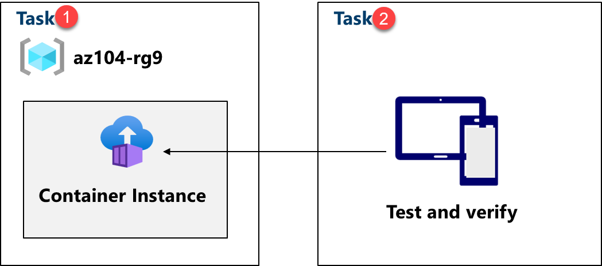
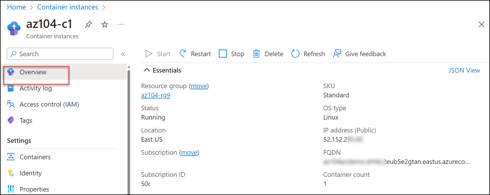

Lab - Implement Azure Container Instances (ACI)
Lab Introduction
In this lab, you learn how to implement and deploy Azure Container Instances.
This lab requires an Azure subscription. Your subscription type may affect the availability of features in this lab. You may change the region, but the steps are written using East US.
Estimated Timing: 15 Minutes
Lab Scenario
Adamantus Technologies has a web application that runs on a virtual machine in your on-premises data center. The organization wants to move all applications to the cloud but doesn't want to have a large number of servers to manage. You decide to evaluate Azure Container Instances and Docker.
Interactive Lab Simulations
There are interactive lab simulations that you might find useful for this topic. The simulation lets you to click through a similar scenario at your own pace. There are differences between the interactive simulation and this lab, but many of the core concepts are the same. An Azure subscription is not required.
-
Deploy Azure Container Instances. Create, configure, and deploy a Docker container with Azure Container Instances.
-
Implement Azure Container Instances. Deploy a Docker image using Azure Container Instances.
Architecture Diagram

Job Skills
- Task 1: Deploy an Azure Container Instance using a Docker image.
- Task 2: Test and verify deployment of an Azure Container Instance.
Task 1: Deploy an Azure Container Instance using a Docker Image
In this task, you will create a simple web application using a Docker image. Docker is a platform that provides the ability to package and run applications in isolated environments called containers. Azure Container Instances provides the compute environment for the container image.
-
Sign in to the Azure portal -
https://portal.azure.com. -
In the Azure portal, search for and select
Container instancesand then, on the Container instances blade, click + Create. -
On the Basics tab of the Create container instance blade, specify the following settings (leave others with their default values):
Setting Value Subscription Select your Azure subscription Resource group az104-rg9(If necessary, select Create new)Container name az104-c1Region East US (or a region available near you) Image Source Quickstart images Image mcr.microsoft.com/azuredocs/aci-helloworld:latest (Linux) -
Click Next: Networking > and specify the following settings (leave others with their default values):
Setting Value DNS name label any valid, globally unique DNS host name Note: Your container will be publicly reachable at dns-name-label.region.azurecontainer.io. If you receive a DNS name label not available error message, specify a different value.
-
Click Next: Monitoring > and uncheck Enable container instance logs.
-
Click Next: Advanced >, review the settings without making any changes.
-
Click Review + Create, ensure that the validation passed and then select Create.
Note: Wait for the deployment to complete. This should take 2-3 minutes.
Note: While you wait, you may be interested in viewing the code behind the sample application. To view the code, browse the \app folder.
Task 2: Test and Verify Deployment of an Azure Container Instance
In this task, you review the deployment of the container instance. By default, the Azure Container Instance is accessible over port 80. After the instance has been deployed, you can navigate to the container using the DNS name that you provided in the previous task.
-
When the deployment completes, select Go to resource link.
-
On the Overview blade of the container instance, verify that Status is reported as Running.
-
Copy the value of the container instance FQDN, open a new browser tab, and navigate to the corresponding URL.

-
Verify that the Welcome to Azure Container Instance page is displayed. Refresh the page several times to create some log entries then close the browser tab.
-
In the Settings section of the container instance blade, click Containers, and then click Logs.
-
Verify that you see the log entries representing the HTTP GET request generated by displaying the application in the browser.
Cleanup your Resources
If you are working with your own subscription take a minute to delete the lab resources. This will ensure resources are freed up and cost is minimized. The easiest way to delete the lab resources is to delete the lab resource group.
- In the Azure portal, select the resource group, select Delete the resource group, Enter resource group name, and then click Delete.
- Using Azure PowerShell,
Remove-AzResourceGroup -Name resourceGroupName. - Using the CLI,
az group delete --name resourceGroupName.
Key Takeaways
Congratulations on completing the lab. Here are the main takeaways for this lab.
- Azure Container Instances (ACI) is a service that enables you to deploy containers on the Microsoft Azure public cloud.
- ACI doesn't require you to provision or manage any underlying infrastructure.
- ACI supports both Linux containers and Windows containers.
- Workloads on ACI are usually started and stopped by some kind of process or trigger and are usually short-lived.
Address: H-34, Ground Floor, Sector 63, Noida, Uttar Pradesh
Email: info@ceekh.com